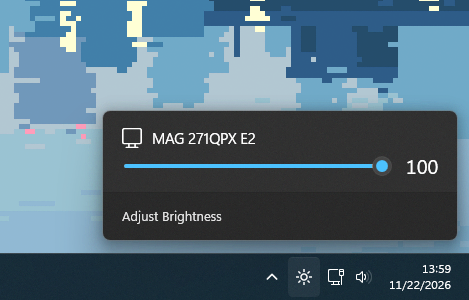
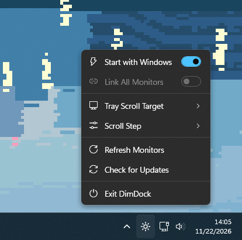

True Hardware DDC/CI
Adjusts real monitor backlight luminance over DDC/CI instead of tinting pixels with a software overlay.
Effortless monitor brightness for Windows 11.
Ditch the monitor buttons. Control real DDC/CI brightness from your taskbar with a native Quick Settings flyout, scroll-wheel dimming, and multi-monitor sync.
winget install ohivan.DimDock
Left-click the tray sun icon for a native Fluent Acrylic flyout, right-click for quick settings with animated toggles, or scroll your mouse wheel directly on the tray icon.
Instant DDC/CI sliders anchored directly above the Windows 11 taskbar.

Animated WinUI 3 pill toggles, scroll target, scroll step, and built-in updates.

Focused WinUI 3 controls, authentic acrylic surfaces, and zero bloat.
Adjusts real monitor backlight luminance over DDC/CI instead of tinting pixels with a software overlay.
Hover the DimDock taskbar icon and roll your mouse wheel to step brightness by 1%, 2%, 5%, or 10%.
Control every external monitor separately, or toggle Link mode to keep your entire desk in sync.
Acrylic flyout, system accent color, light and dark themes, and native taskbar context menu toggles.
DPI-aware taskbar icon whose core and rays scale smoothly with brightness so you can read level at a glance.
Built on .NET 10 WPF with throttled DDC writes, automatic wake/display rescanning, and zero telemetry.
DimDock is built natively for Windows instead of wrapping a hidden web browser, so it uses far less memory than Twinkle Tray.
Install via WinGet in one line or grab the latest release directly from GitHub.
winget install ohivan.DimDock